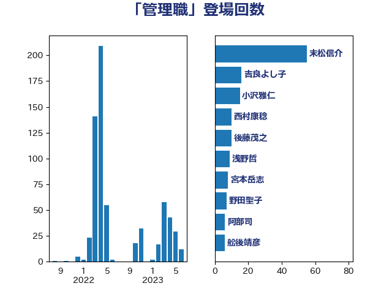

単語「管理職」

| 末松信介 | 自由民主党 | 55 回 |
| 吉良よし子 | 日本共産党 | 16 回 |
| 小沢雅仁 | 立憲民主党 | 15 回 |
| 西村康稔 | 自由民主党 | 10 回 |
| 後藤茂之 | 自由民主党 | 10 回 |
| 浅野哲 | 国民民主党 | 9 回 |
| 宮本岳志 | 日本共産党 | 8 回 |
| 野田聖子 | 自由民主党 | 7 回 |
| 阿部司 | 日本維新の会 | 6 回 |
| 舩後靖彦 | れいわ新選組 | 6 回 |
| 斉藤鉄夫 | 公明党 | 6 回 |
| 城井崇 | 立憲民主党 | 6 回 |
| 古賀千景 | 立憲民主党 | 6 回 |
| 上野通子 | 自由民主党 | 6 回 |
| ながえ孝子 | 無所属 | 6 回 |
| 鬼木誠 | 立憲民主党 | 5 回 |
| 金子恭之 | 自由民主党 | 5 回 |
| 道下大樹 | 立憲民主党 | 5 回 |
| 葉梨康弘 | 自由民主党 | 5 回 |
| 田村智子 | 日本共産党 | 5 回 |
| 永岡桂子 | 自由民主党 | 5 回 |
| 水岡俊一 | 立憲民主党 | 5 回 |
| 山崎正恭 | 公明党 | 5 回 |
| 伊藤孝恵 | 国民民主党 | 5 回 |
| 笠井亮 | 日本共産党 | 4 回 |
| 岸田文雄 | 自由民主党 | 4 回 |
| 山岡達丸 | 立憲民主党 | 4 回 |
| 伊藤岳 | 日本共産党 | 4 回 |
| おおつき紅葉 | 立憲民主党 | 4 回 |
| 鈴木義弘 | 国民民主党 | 3 回 |
| 菊田真紀子 | 立憲民主党 | 3 回 |
| 荒井優 | 立憲民主党 | 3 回 |
| 吉川元 | 立憲民主党 | 3 回 |
| 倉林明子 | 日本共産党 | 3 回 |
| 串田誠一 | 日本維新の会 | 3 回 |
| 上田英俊 | 自由民主党 | 3 回 |
| 齋藤健 | 自由民主党 | 2 回 |
| 高良鉄美 | 無所属 | 2 回 |
| 高橋光男 | 公明党 | 2 回 |
| 鈴木英敬 | 自由民主党 | 2 回 |
| 金村龍那 | 日本維新の会 | 2 回 |
| 逢坂誠二 | 立憲民主党 | 2 回 |
| 萩生田光一 | 自由民主党 | 2 回 |
| 羽田次郎 | 立憲民主党 | 2 回 |
| 篠原豪 | 立憲民主党 | 2 回 |
| 石井苗子 | 日本維新の会 | 2 回 |
| 田畑裕明 | 自由民主党 | 2 回 |
| 松本剛明 | 自由民主党 | 2 回 |
| 杉尾秀哉 | 立憲民主党 | 2 回 |
| 本村伸子 | 日本共産党 | 2 回 |
| 斎藤嘉隆 | 立憲民主党 | 2 回 |
| 守島正 | 日本維新の会 | 2 回 |
| 堀場幸子 | 日本維新の会 | 2 回 |
| 勝部賢志 | 立憲民主党 | 2 回 |
| 加藤勝信 | 自由民主党 | 2 回 |
| 佐々木さやか | 公明党 | 2 回 |
| 一谷勇一郎 | 日本維新の会 | 2 回 |
| 馬淵澄夫 | 立憲民主党 | 1 回 |
| 音喜多駿 | 日本維新の会 | 1 回 |
| 鈴木庸介 | 立憲民主党 | 1 回 |
| 金子恵美 | 立憲民主党 | 1 回 |
| 重徳和彦 | 立憲民主党 | 1 回 |
| 赤池誠章 | 自由民主党 | 1 回 |
| 西村智奈美 | 立憲民主党 | 1 回 |
| 藤丸敏 | 自由民主党 | 1 回 |
| 竹詰仁 | 国民民主党 | 1 回 |
| 福島伸享 | 無所属 | 1 回 |
| 神田憲次 | 自由民主党 | 1 回 |
| 石川大我 | 立憲民主党 | 1 回 |
| 畦元将吾 | 自由民主党 | 1 回 |
| 牧義夫 | 立憲民主党 | 1 回 |
| 泉健太 | 立憲民主党 | 1 回 |
| 河野太郎 | 自由民主党 | 1 回 |
| 沢田良 | 日本維新の会 | 1 回 |
| 池田佳隆 | 自由民主党 | 1 回 |
| 水野素子 | 立憲民主党 | 1 回 |
| 横山信一 | 公明党 | 1 回 |
| 榛葉賀津也 | 国民民主党 | 1 回 |
| 柴田巧 | 日本維新の会 | 1 回 |
| 有村治子 | 自由民主党 | 1 回 |
| 川合孝典 | 国民民主党 | 1 回 |
| 岩谷良平 | 日本維新の会 | 1 回 |
| 岡本あき子 | 立憲民主党 | 1 回 |
| 山際大志郎 | 自由民主党 | 1 回 |
| 山添拓 | 日本共産党 | 1 回 |
| 尾身朝子 | 自由民主党 | 1 回 |
| 小倉將信 | 自由民主党 | 1 回 |
| 大島敦 | 立憲民主党 | 1 回 |
| 堤かなめ | 立憲民主党 | 1 回 |
| 堂故茂 | 自由民主党 | 1 回 |
| 和田義明 | 自由民主党 | 1 回 |
| 吉田久美子 | 公明党 | 1 回 |
| 吉田はるみ | 立憲民主党 | 1 回 |
| 吉田とも代 | 日本維新の会 | 1 回 |
| 吉川沙織 | 立憲民主党 | 1 回 |
| 加藤鮎子 | 自由民主党 | 1 回 |
| 佐藤正久 | 自由民主党 | 1 回 |
| 伊佐進一 | 公明党 | 1 回 |
| 仁木博文 | 無所属 | 1 回 |
| 下野六太 | 公明党 | 1 回 |
| 上田清司 | 国民民主党 | 1 回 |
| 三浦信祐 | 公明党 | 1 回 |